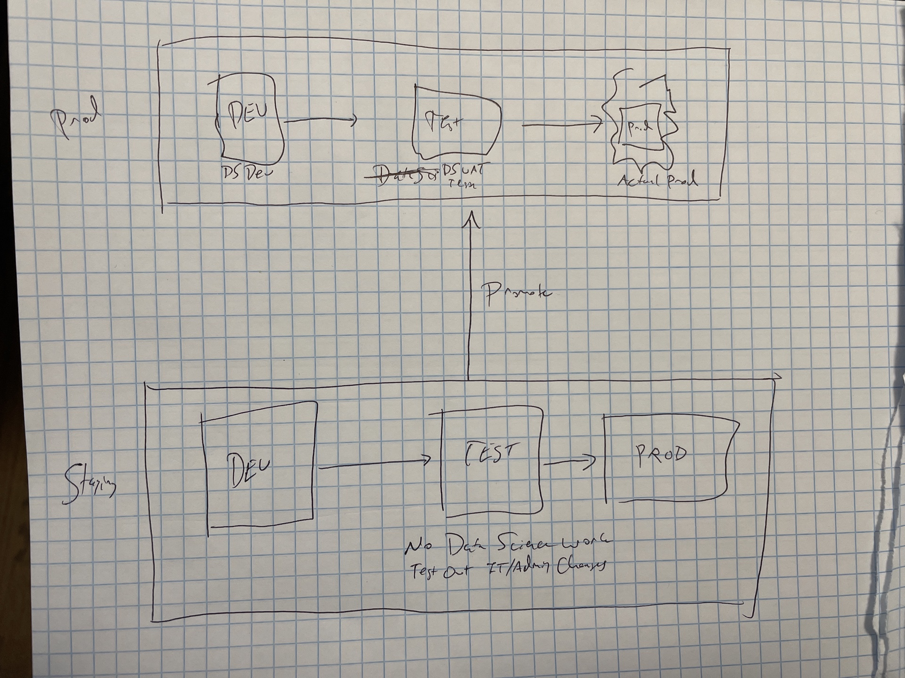
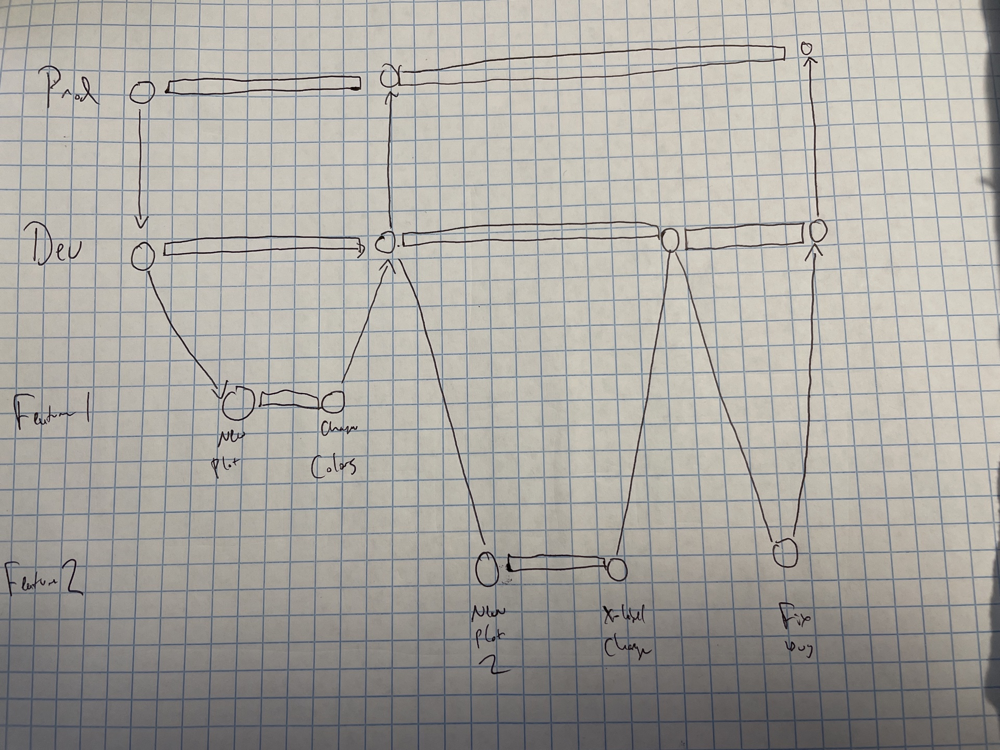

2 Code Promotion Workflows
As a field, IT/Admin/DevOps/SysAdmin has been around for much longer than data science. And while the topics they’re addressing are different than data science, there are some workflows that translate nicely into the data science world.
One of those is code and environment promotion.
Over time, smart SysAdmins realized that it’s better not to make changes for the first time in production systems people depend on for various reasons. And so they’ve developed patterns for putting things into production.
Generally, this workflow involves three or four (nearly) identical environments. Most often the workflow is dev/test/prod, though sometimes there are separate test and user acceptance testing (UAT) environments.
2.1 Dev/Test/Prod
Conceptually, the use of each environment is quite straightforward. Dev is a development environment – a sandbox where new things can be developed freely with no risk. In a data science context, this generally means that dev and test environments may need to be connected to input data, but that output needs to be somehow mocked or redirected so it doesn’t leak back into prod.
The test environment is for (shocker) testing. This likely includes functional testing that things work as intended, but also might include UAT. In the context of data science assets, UAT usually answers questions like whether labels and buttons are clear and whether plots and graphs answer exactly the intended questions.
The production environment is for production – meaning use by people and machines outside the development process. Changes are never made in prod, except when they’ve already been validated in the test environment, and then the only thing that happens in prod is a quick update to the newest testing version.
This obviously requires that the dev, test, and prod environments be very close mirrors of each other. For example, doing test on a Windows laptop and then going to prod on a Linux server introduces a potential that things that worked in test suddenly don’t when going to prod. For that reason, making all three (or at least test and prod) match as precisely as possible is essential (more in chapter 1.3). The need to match these three environments so precisely is one reason for data science workloads moving onto servers.
In a data science context, the dev/test/prod sequence looks a little different from in an IT context. In an IT context, dev/test/prod means three identical environments. This is generally not the case in a data science context.
For a data scientist, dev is often a different environment than test or prod. For example, it’s likely that you would do your development of your asset in your favorite R or Python data science IDE – perhaps RStudio, JupyterHub, Spyder, or PyCharm. This environment might be server-based, or it might be on your laptop.
The biggest reason for this difference is that pure DevOps involves building a known product according to an identified need. Data science is different. The early parts of a data science project are about discovery and iteration – that means that you can’t start “development” right off the bat. There’s first some research and discovery that happens in an environment well-suited to such things before promotion happens into a “deployment” environment.
In contrast, traditional software development rarely starts with discovery. Instead, it starts with producing a minimal set of features that has been identified ahead of time. This difference causes much friction and misunderstanding between data science and IT/Admin/DevOps teams.
At that point, you’ll promote your asset into test, which might be a docker container, straight onto a server, or a deployment platform like RStudio Connect. Then, once everything is ready to go, you’d promote it into prod. This is somewhat different than a traditional dev/test/prod setup where all three environments are very precise mirrors of each other. In some cases, like if you’re using a product that hosts your apps for you, test and prod may even be on the same physical server, which would be very unusual in the software development world.
Depending on how dependable your prod environment has to be, it can be useful to maintain a “two dimensional” dev/test/prod setup as in the graphic below.

In this setup, you would select the IT configuration that works for your organization and maintain one or two copies of the entire environment. I often call this a staging environment to differentiate it from the dev/test/prod environments for the data science assets.
So when you wanted to make a chance to the underlying servers or their architecture, that would be tested in the staging environment and then deployed to production. Data scientists would never work in the staging environment (except as testers), that’s purely for IT/Admin testing. The staging environment would include all of the environments data scientists would use – dev, test, and prod.
Then, data science code promotion through dev/test/prod would be distinct from how server changes get made.
2.2 Cattle, Not Pets
In the IT world, there’s a phrase that servers should be cattle, not pets. The idea here is that servers should be unremarkable and that each one should be more-or-less interchangeable. This matters, for example, in making sure your test and prod environments look exactly the same.
A bad pattern then would look like this – I develop an update to an important Shiny or Dash app in my local environment and then move it onto a server. At that point, the app doesn’t quite work and I make a bunch of manual changes to the environment – say adjusting file paths or adding R or Python packages. Those manual changes end up not really being documented anywhere. A week later, when I go to update the app in prod, it breaks on first deploy, because the server state of the test and prod servers drifted out of alignment.
The main way to combat this kind of state drift is to religiously use state-maintaining infrastructure as code (IaC) tooling. That means that all changes to the state of your servers ends up in your IaC tooling and no “just login and make it work” shenanigans are allowed in prod.
If something breaks, you reproduce the error in staging, muck around until it works, update your IaC tooling to fix the broken thing, test that the thing is fixed, and then (and only then) push the updated infrastructure into prod directly from your IaC tooling.
2.2.1 Infrastructure As Code Tooling
There are many, many different varieties of infrastructure as code tooling. There are many books on infrastructure as code tooling and I won’t be covering them in any depth here. Instead, I’ll share a few of the different “categories” (parts of the stack) of infrastructure as code tooling and suggest a few of my favorites.
To get from “nothing” to a usable server state, there are (at minimum) two things you need to do – provision the infrastructure you need, and configure that infrastructure to do what you want.
For example, let’s say I’m standing up a server to deploy a simple shiny app. In order to get that server up, I’ll need to stand up an actual server, including configuring the security settings and networking that will allow the proper people to access the server. Then I’ll need to install a version of R on the server, the Shiny package, and a piece of hosting software like Shiny Server.
So, for example, you might use AWS’s CloudFormation to stand up a virtual private cloud (VPC), put an EC2 server instance inside that VPC, attach an appropriately-sized storage unit, and attach the correct networking rules. Then you might use Chef to install the correct software on the server and get your Shiny app up-and-running.1
In infrastructure as code tooling, there generally isn’t a clear dividing line between tools that do provisioning and tools that do configuration…but most tools lean one way or the other.
Basically any tool does provisioning will directly integrate into the APIs of the major cloud providers to make it easy to provision cloud servers. Each of the cloud providers also has their own IaC tool, but many people prefer to use other tools when given the option (to be delicate).
The other important division in IaC tools is declarative vs imperative. In declarative tooling, you simply enumerate the things you want, and the tool makes sure they get done in the right order. In contrast, an imperative tool requires that you provide actual instructions to get to where you want to go.
In many cases, it’s easy to be declarative with provisioning servers, but it’s often useful to have a way to fall back to an imperative mode when configuring them because there may be dependencies that aren’t obvious to the provisioning tool, but are easy to put down in code. If the tool does have an imperative mode, it’s also nice if it’s compatible with a language you’d be comfortable with.2
One somewhat complicated addition to the IaC lineup is Docker and related orchestration tools. There’s a whole chapter on containerization and docker, so check that out if you want more details. The short answer is that docker can’t really do provisioning, but that you can definitely use docker as a configuration management IaC tool, as long as you’re disciplined about updating your Dockerfiles and redeployment when you want to make changes to the contents.
Basically none of these tools will save you from your own bad habits, but they can give you alternatives.
In short, exactly which tool you’ll need will depend a lot on what you’re trying to do. Probably the most important question in choosing a tool is whether you’ll be able to get help from other people at your organization on it. So if you’re thinking about heading into IaC tooling, I’d suggest doing a quick survey of some folks in DevOps and choosing something they already know and like.
2.3 CI/CD and The mechanics of code promotion
The common term for the mechanics of code promotion are Continuous Integration/Continuous Deployment (CI/CD). The actual practice of CI/CD relates deeply to the philosophy of DevOps and agile software development in ways that are beyond the scope of this book.3
In this book I’m mainly going to focus on a few workflows and a few tools that I’ve found particularly useful in a data science context.
The most concrete way that CI/CD practices get expressed is through integrations into source control software – usually Git. If you’re not already familiar, I’d suggest spending some time learning git. I will admit that learning git is nontrivial. People who say git is easy are either lying to look smarter or learned so long ago that they have forgotten the early-to-git sense that you’re likely to mess up your entire workflow at any moment.
If you don’t already know git and want to learn, I’d recommend HappyGitWithR by Jenny Bryan. It’s a great on-ramp to learn git.
Even if you’re a Python user, the sections on getting started with git, on basic git concepts, and on workflows will be useful since they approach git from a data science perspective.
For the purposes of this section, I’m going to assume you at least conceptually understand what git branches are and what a merge is – as much of your CI/CD pipeline will be based on what happens when you merge.
For production data science assets, I generally recommend long-running dev (or test) and prod branches, with feature branches for developing new things. The way this works is that new features are developed in a feature branch, merged into dev for testing, and then promoted to prod when you’re confident it’s ready.
For example, if you had two new plots you were adding to an existing dashboard, your git commit graph might look like this:

\[TODO: change dev to test to match above, label merges\]
CI/CD adds a layer on top of this. CI/CD allows you to integrate functional testing by automatically running those tests whenever you do something in git. These jobs can run when a merge request is made, and are useful for tasks like spellchecking, linting, and running tests.
For the purposes of CI/CD, the most interesting jobs are those that do something after there’s a commit or a completed merge, often deploying the relevant asset to its designated location.
So a CI/CD integration using the same git graph as above would have released 3 new test versions of the app and 2 new prod versions. Note that in this case, the second test release revealed a bug, which was fixed and tested in the test version of the app before a prod release was completed.
In years past, the two most popular CI/CD tools were called Travis and Jenkins. By all accounts, these tools were somewhat unwieldy and difficult to get set up. More recently, GitHub – the foremost git server – released GitHub Actions (GHA), which is CI/CD tooling directly integrated into GitHub that’s free for public repositories and free up to some limits for private ones.
It’s safe to say GHA is eating the world of CI/CD.4
For example, if you’re reading this book online, it was deployed to the website you’re currently viewing using GHA. I’m not going to get deep into the guts of GHA, but instead talk generally about the pattern for deploying data science assets, and then go through how I set up getting this book to run on GHA.
2.3.1 Using CI/CD to deploy data science assets
In general, using a CI/CD tool to deploy a data science asset is pretty straightforward. The mental model to have is that the CI/CD tool stands up a completely empty server for you, and runs some code on it.
That means that you’re just doing something simple like spellchecking, you can probably just specify to run spellcheck. If you’re doing something more complicated, like rendering an R Markdown document or Jupyter Notebook and then pushing it to a server, you’ll have to take a few extra steps to be sure the right version of R or Python is on the CI/CD server, that your package environment is properly reproduced, and that you have the right code to render your document.
Feel free to take a look through the code for the GitHub Action for this book. It’s all YAML, so it’s pretty human-readable.
Here’s what happens every time I make a push to the main branch of the repository for this book:5
- Checkout the current
mainbranch of the book. - Use the
r-libaction to install R. - Use the
r-libaction to setup pandoc (a required system library for R Markdown to work). - Get the cached
renvlibrary for the book. - Render the book.
- Push the book to GitHub Pages, where this website serves from.
You’ll see that it uses a mixture of pre-defined actions created for general use, pre-defined actions created by people in the R community, and custom R code I insert to restore an renv library and render the book itself.
2.4 Swapping Configurations
Sometimes you want a little more flexibility – for example the option to switch many the environment variables depending on the environment. In R, the standard way to do this is using the config package. There are many options for managing runtime configuration in Python.
2.5 Exercises
- Create something and add GHA integration \[TODO: What to use as example?\]
- Stand up some virtual environments using ___ \[TODO: Which ones to try?\]
This is the combination we used internally at RStudio when I started. I do not miss it. In particular, the Chef team “cleverly” named much of their tooling after kitchen related things, making it quite difficult to google.↩︎
For example, conditional logic in Chef code mostly relies on the Ruby language, which you’re unlikely to know if you’re a data scientist. In contrast, Pulumi (a relative newcomer currently popular among many RStudio engineers) uses Python, which way more people know.↩︎
I strongly recommend The Phoenix Project by Gene Kim, Kevin Behr, and George Spafford as a fun way to get acquainted if you’re even remotely interested.↩︎
It’s worth remarking that GitLab has long offered a very good CI/CD integration inside GitLab. It’s called GitLab CI/CD. I’m going to talk about GHA, since it’s what I’m familiar with, but you can accomplish these same things with GitLab CI/CD.
Lots of organizations have Azure DevOps, formerly known as Visual Studio Team Services. Microsoft, who owns Azure, acquired GitHub in 2018, so I’d expect Azure DevOps and GitHub to converge somewhat…but who knows?↩︎
Recall that a finished merge request into the
mainbranch is equivalent to a push tomain.↩︎